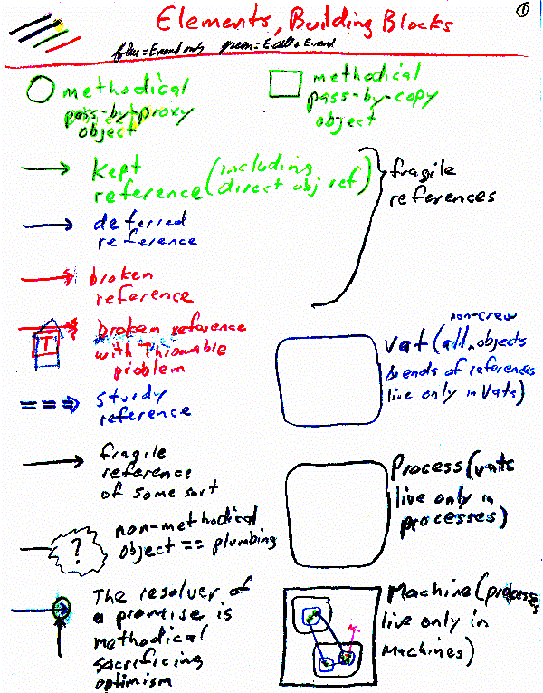
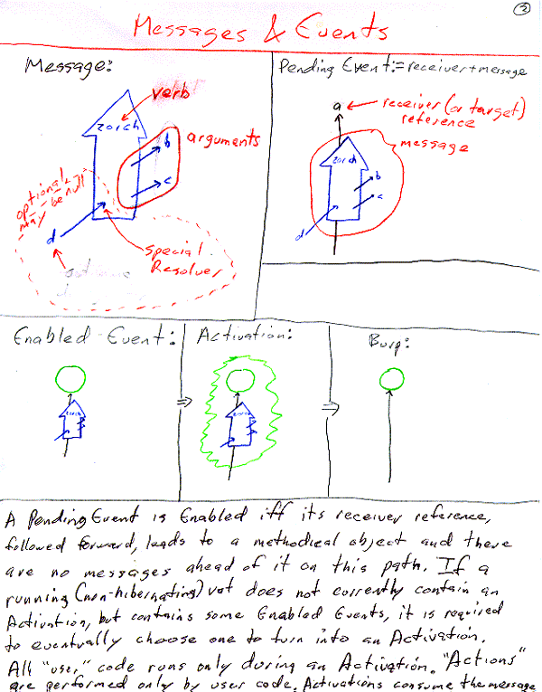
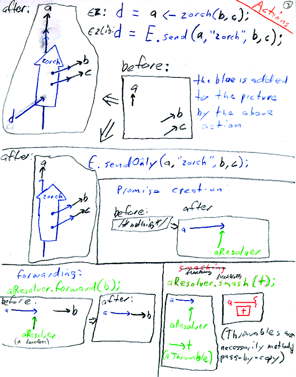
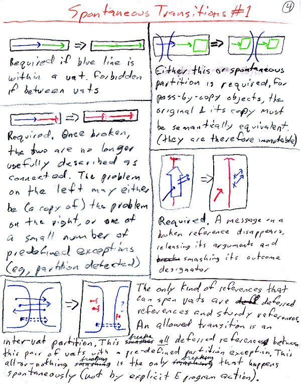
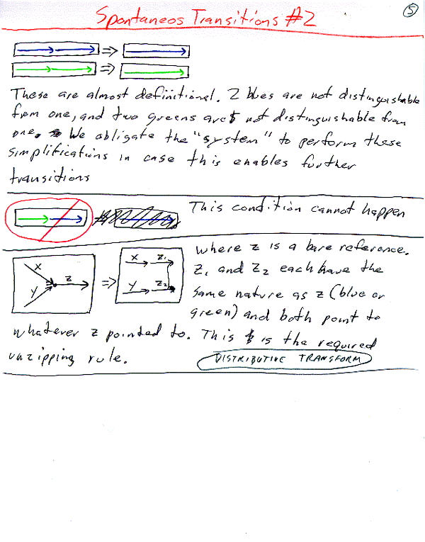
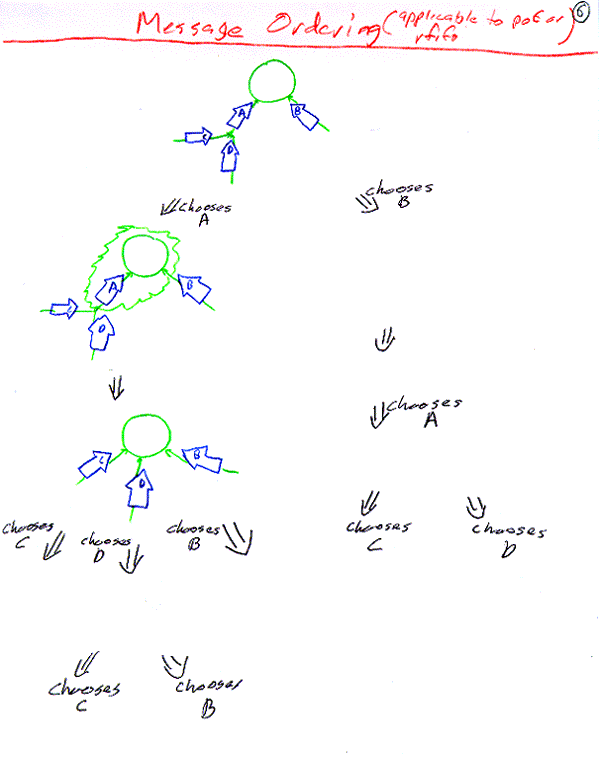
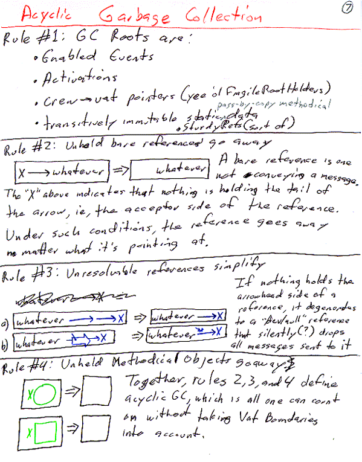
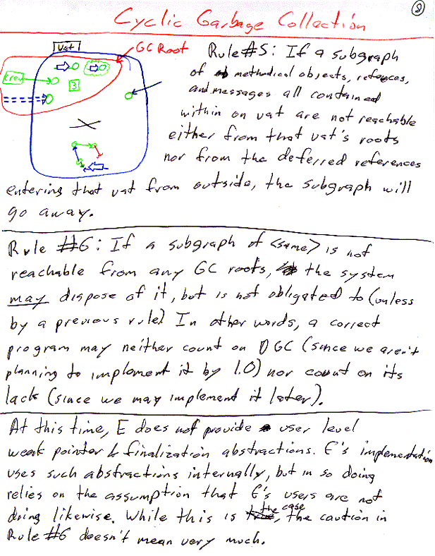

| |
Reference Mechanics |
||||||
Asynchronous Optimistic Messaging
for Distributed Secure Reliable O-O Programming
Last updated: [July 10, 1998. MarkM]
Document authored by MarkM.
Original Subsystem (E) authored primarily by Danfuzz
Bornstein.
Current Subsystem (ELib and
E) authored by MarkM.
See "What Javadoc Does Who Need to Know?" below, to get started quickly.
Introduction
Over time, programmers have become (in some ways) reasonably successful at organizing computation that occurs within a single machine. The necessary lessons cost generations of failed companies. For Communities.com to succeed, we must become reasonably successful at organizing computation spread across a large number of machines, while securely serving the interests of a diverse set of parties. To succeed at this, we cannot afford to learn the necessary lessons from scratch -- these would likely be even more expensive than the uni-machine lessons. Nor can we simply leverage the lessons of previous distributed systems builders -- there are not yet adequate demonstrations of success. Instead, we must borrow lessons from uni-machine programming where appropriate.
But only where appropriate! Distributed systems (such as CORBA and RMI) can also fail by overgeneralization from uni-machine programming practices. In certain ways, uni-machine and distributed systems are very similar. In other ways, they are very different. Our strategy for generalizing uni-machine programming paradigms must account for both their similarities and their differences.
Related Documents
Current issues
Some current issues with the design of New-E have their own pages explaining
the design space and the potential solutions.
Currently the only one is the proxy typing
discussion.
Background reading
E derives from a long and diverse pedigree of languages and operating systems:
Agorics' KeyKOS pages, and Jonathan Shapiro's KeyKOS and EROS pages.
Ken Kahn & Mark Miller, "Language Design and Open Systems" in The Ecology of Computation, ed Bernardo Huberman, North Holland, 1988.
"The E Extension to Java" (a Communities.com white paper)
"Satan Comes to Dinner" (secure dining philosophers in E)
Mark Stiegler's "Intro to Capability Security"
MarkM's "Computer Security" pages (still in formation)
Presentation on Mult-E to OnLive (powerpoint converted to html XXX files missing)
"A wise man even learns from the mistakes of others" --seen on a fortune cookie.
Requirements (or Strong Preferences)
Smooth integration between the local/sequential and distributed worlds.
- Abstraction power of Object Orientation in both worlds.
- Capability Security Paradigm integrated across both worlds.
- Concurrency control amenable to maintaining the invariants of mutable objects under all conditions.
Powerful and simple programming paradigm for organizing distributed computation, that accomodates the properties of distributed systems.
- Partial Failure
- Inherent Asynchrony
- Long Latencies
- "Cooperation without Vulnerability" without a shared TCB (Trusted Computer Base).
- Objects that outlive program versions (and hence may need to be upgraded)
- Co-existence of diverse versions of the participating programs
Single address space test: Programs built correctly for the distributed case work correctly in the local case.
Requirements (or strong preferences) not met by the current E system:
- E itself provides no support for upgrade, and arguably shouldn't. This is provided instead by state bundles.
- E does not currently support version co-existence.
- Provision of the above by a library within a standard language (eg,
Java) without
- bloat (unreasonable expansion from the code as written by the programmer to the code that runs)
- preprocessors
- post-processors
- funky classloaders
- or anything else that would inhibit straightforward use of stock programming environments and debuggers.
Architecture
Starting Uni-Machine Programming Paradigms:
| Abstraction mechanisms | Object-oriented programming | As in Smalltalk |
| Security | Capability patterns | As in KeyKOS |
| Concurrency | Actors/Event-loop programming | As in Joule |
| Partial Failure | "Quake" model of failures Sturdy vs Fragile References |
| Inherently Asynchronous | One-way Messages |
| Long Latencies | Non-blocking event loop Optimistic References Pipelined Requests |
| No Universal TCB | Object/Machine Trust Equivalence |
| Objects outlive versions | State Bundles (outside E) |
| Comm Co-existence | Not currently supported |
Current Architecture Overview
The introduction set the scene; this section gives the key properties of the current design. It may mention classes and some important interfaces but it doesn't go into details. Someone should be able to read just the overviews of our design documents and get a good understanding of how the system works and fits together, without knowing the full details. Also include any insights gained from experience like design bugs or expense discovered in usage.
Proposed Architecture Overview
These need to be turned into real illustrations surrounded by a real explanation








Off the shelf alternatives
Any notes about potential off the shelf technologies that could be used, and their trade-offs.
Other Design Objectives, Constraints and Assumptions
Lists any special objectives and assumptions of the code e.g. reusability, thread safety, security, performance, use of resources, compatibility with existing code etc. This section gives important context for reviewers
Current implementation
What Javadoc Does Who Need to Know?
All of ELib is javadoc'ed, but for the ELib user most of this is irrelevant internal detail. The normal ELib application programmer should only need to use the methods found in E, the static pair making methods of Ref, and the methods found in Resolver.
Intermediate between ELib implementer and ELib application programmer is the ELib framework creator -- using the ELib constructs to create new forms of message plumbing. In the E language, the abstraction provided for this purpose was the Deflector. In ELib, one instead defines new implementors of Callable (for intercepting synchronous calls) or Ref (for intercepting asynchronous and synchronous calls). For example, A Proxy would be a kind of Vow, since it needs to intercept asynchronous calls, whereas a vat-to-crew or crew-to-vat Tether may be a Callable, if it only needs to intercept synchronous calls.
If one wished to create multiple runQ's (need link to issues), one would also need to use the class Runner.
Examples, Testing and Debugging
ELib is currently tested by two pieces of code: ERunDemo is a trivial test/example that demostrates event-loop concurrency and Promise-based optimism. E is a programming language, usable as a test harness to test/exercise/debug all of ELib as well as programs built using ELib. (As you might guess from the names, ELib was originally built to be the runtime library for E.)
Known Bugs & Deficiencies
E.whenKept() and E.whenBroken() are not yet implemented.
ERunDemo demonstrates and documents a mysterious (but repeatable!) concurrency control bug that doesn't occur under the debugger. This is high priority.
The coverage testing hooks in org.erights.e.elib.prim.JavaMemberNode provide access to global static state, and so provide a covert channel. This needs to be guarded by a capability which can be given out only to authorized testing code.
ELib to Java Binding Issues:
- Only arguments are coerced to the parameter type. We should also coerce
the receiver to the receiver type. (in org.erights.e.elib.prim.JavaMemberNode.execute())
- org.erights.e.elib.prim.JavaMemberNode.coerce() is a hacky bunch of
special cases that grew as needed, rather than a principled framework.
Such a principled framework has yet to be designed.
- Deflectors of public java interfaces should eventually be generated
and loaded on the fly, driven by attempting to load a mangling of
the original interface name.
- Deflectors of public java interfaces should eventually be generated
and loaded on the fly, driven by attempting to load a mangling of
the original interface name.
- org.erights.e.elib.prim.ScriptMaker currently presents all
public java methods and fields of all public java classes, modulo
1) In overloading, only name and arity are significant. and 2) A sugaring
mechanism whereby various sugaring classes (org.erights.e.elib.base.*Sugar
and org.erights.e.elib.prim.ObjectSugar) add or override instance methods
of the corresponding java classes. Deficiencies in this mechanism:
- When more than one java method of the same name has the same arity,
an arbitrary one wins. This is unacceptably stupid. Rather, that
name-arity should be ruined for that object (bound to a method that
throws), and methods with each of the full signatures as names should
be defined instead. Partially done: Methods we also
register the methods under mangled names using the parameter-type
signature.
- I'm not sure whether a non-sugar instance method on a subclass
can override a sugar method associated with a superclass. This is
needed for the ambassador pattern.
- For production use, methods should be exported explicitly, and
hidden by default. The exported methods should all be audited for
security.
- For debugging use, where methods are exported by default (as in
the current implementation) one must be able to explicitly prevent
certain methods from being exported (such as java.lang.Object.wait()).
- The binding between a class and its sugaring class is currently
by initialize-time registration in org.erights.e.elib.prim.ScriptMaker.
It should instead be by class discovery of a mangling of the original
class's name.
- Inheritance of multiple sugaring (for which there are no known
cases) just picks the sugaring of an arbitrary supertype, rather
than doing the right thing. What "the right thing" is
here has yet to be specified.
- There is currently no way to sugar a static method.
- JavaMemberNodes are currently recreated rather than inherited,
leading to wasted space, and making the ELib coverage recorder much
less useful.
- Each array type gets its own vtable with its own JavaMemberNodes,
when they should instead be shared, similarly wasting space and
making coverage stats less meaningful.
- When more than one java method of the same name has the same arity,
an arbitrary one wins. This is unacceptably stupid. Rather, that
name-arity should be ruined for that object (bound to a method that
throws), and methods with each of the full signatures as names should
be defined instead. Partially done: Methods we also
register the methods under mangled names using the parameter-type
signature.
- ELib needs a protocol-inquiry meta-protocol so that, for example, an object can be registered as listening only for those events it can respond to. (thanks for this requirement go to Tony Grant and Bill Frantz) E would also benefit from this addition.
Design Issues
Resolved Issues
- Methods are registered under both their unmangled and their mangled names. See The E-to-Java Binding Spec.
- If p is a broken reference, should E.resolution(p) throw
a NestedException containing the problem, or should it return p?
Either answer is semantically plausible, so it would be good to know
which is more convenient. But this needs to get pinned down soon!
- Done. If p is broken, E.resolution(p) returns p. Turns out to be much more convenient.
Open Issues
- Proxy typing
- Are optimistic return results good? (placeholder for link to possible document by Arturo)
Unless stated otherwise, all text on this page which is either unattributed or by Mark S. Miller is hereby placed in the public domain.
| |
|
report bug (including invalid html)
|
||||||||